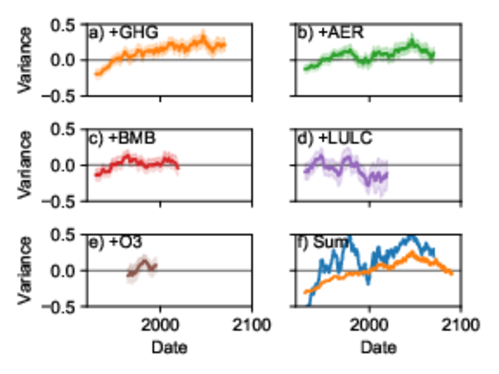

The Impact of Anthropogenic Forcing on ENSO Amplitude
Abstract
The El Niño/Southern Oscillation (ENSO) is the dominant mode of interannual climate variability, with substantial associated global socio-economic impacts. Due to their significance, shifts in ENSO under climate change also have the potential to substantially impact human society and natural ecosystems. However, it is currently unclear what effect greenhouse gas (GHG) and industrial aerosol (AER) emissions have on ENSO, as well as what effect these factors have when combined. This study examined transient changes to ENSO variance under a variety of forcing scenarios using the CESM1 Large and Single-Forcing Ensembles. These multi-member ensembles span the historical record (1920-2005) and much of the 21st C (2006-2080 for GHG/AER). A 2000-year pre-industrial (PI) control simulation is used to account for model drift and 20-year running variance of the Niño 3.4 SST index is used as a proxy for ENSO variance. The ensemble mean and standard error of each ensemble was calculated, while the Probability Density Function (PDF) is computed for the PI control simulation to estimate the statistical significance of simulated changes. We calculated the correlation coefficient between ocean temperature in the equatorial Pacific and Niño 3.4 under various forcing conditions, concluding that Pacific stratification likely is tied to changes to ENSO amplitude. We identifed significant increases in variance of the Niño 3.4 index under full-forcing conditions during the historical record and attribute these mainly to changes in GHG, with the potential emergence of AER-driven increases in the decades to come.
1 Introduction
El Niño is the main mode of interanual climate variability, originating from an interaction between the atmosphere and water movement and temperature in the Pacific ocean bjerknes1969atmospheric. The reasons for studying ENSO are clear, as ENSO has drastically affected climate patterns worldwide, modulating rainfall and temperature in nearly every continent ropelewski1987global. For example, the recent 2015-2016 El Niño event contributed to record-breaking high temperatures and droughts in South America jimenez2016record. At the same time, long-term anthropogenic greenhouse gas emissions are causing global temperatures to increase through a greenhouse effect. The effect of greenhouse emissions and other factors on ENSO intensity remains unclear.
The two major ways in which the earth’s climate varies are climate change and climate variability. Climate change is defined as climate changes caused by external factors, most notably greenhouse gasses, natural and artificial aerosol emissions, land use changes, and stratospheric ozone changes. Greenhouse gas emissions have a clear impact on the earth’s climate, global warming. Climate change is usually long-term. In contrast, internal variability is defined as changes to the earth’s climate originating from natural climatic processes, such as ENSO, Pacific Decadal Oscillation (PDO), Atlantic Multidecadal Oscillation (AMO), and others. Climate variability occurs on much shorter timescales, and is usually cyclical and driven by feedback loops.
Research on the effect of external forcing on ENSO remains inconclusive, as results from similar studies conflict. nowack2017role predicted an overall increase in Niño 3.4 standard deviation under a combination of 4xCO\(_2\) and interactive ozone forcing using single-model simulations, showing that greenhouse gasses increase the frequency of extreme ENSO by favoring a more Niño-like in the tropical Pacific, while ozone dampens this effect. In contrast, a few studies have found that ENSO amplitude decreases under global warming in certain coupled models kohyama2018weakening.
However, other studies have failed to find any statistically significant ENSO response to external forcing stevenson2012significant. Analysis using NCAR’s CESM Large Ensemble shows an ensemble size of at least 15 models is necessary to attribute changes to Niño variance to external forcing and reject the null hypothesis that internal variability is responsible for changes to ENSO zheng2018response. Several modes of internal variability have been shown to modulate ENSO, including the AMO levine2017impact and Tropical Pacific Decadal Variability (TPDV) zheng2018response. An analysis of the Max Plank Institute’s Grand Ensemble as well as NCAR’s CESM Large Ensemble suggests that 80\% of changes to ENSO amplitude can be attributed to internal variability, but given a large enough ensemble, significant changes in ENSO amplitude due to climate change can be detected maher2018enso.
In this study, we show that NCAR’s CESM predicts significant increase in ENSO amplitude in the 21st century, and that greenhouse gasses and aerosol emissions play important roles in causing this increase. As in previous studies, the role of internal variability in conjunction with forcing was examined. We hypothesized that increased stratification in the future plays a large role in causing this predicted increase.
2 Data
The primary data source for this study is NCAR’s Community Earth System Model Large Ensemble and Single Forcing Ensemble (CESM1-LE). The Large Ensemble contains 40 simulations of the CESM1 coupled model, forced with historic radiative forcing from 1920 to 2005 and according to the RCP 8.5 protocol from 2006 to 2100 kay2015community. The single forcing ensemble is a collection of sub-ensembles for various climate factors (greenhouse gas, aerosols, biomass burning, land use, ozone). Each simulation is forced by a combination of all factors except for one, allowing the impact of a single factor to be deduced by subtracting the ensemble mean from the fully-forced ensemble mean deser2020isolating}. For example, the xghg (greenhouse gas) ensemble is forced by aerosol emissions, biomass burning, land use, and ozone. There is also a preindustrial control simulation, with all radiative forcing fixed at 1850 levels.
3 Methods and Results
Niño 3.4 Variance
We estimate 20th and 21st century ENSO amplitude for each model in the fully-forced, single-forced, and PI control CESM1 ensembles using the variance of the Niño 3.4 region of the Pacific ocean (5N-5S, 170W-120W). We measure variance on 20-year centered sliding windows. We calculate the multi-model mean for each ensemble, as well as the ensemble standard error. The results of this calculation are shown in figure fig:variance_1.
The fully-forced ensemble exhibits moderate increase in variance, with the other ensembles showing less meaningful changes. In the fully-forced ensemble, the variance of the Niño 3.4 region increases beyond 2 standard errors of the control, increasing until the mid-21st century, and then decreasing gradually. The excluded greenhouse, aerosol, and biomass-burning ensembles also contain a slight increase, which may not be statistically significant. Although the excluded land use ensemble mean has a strong increase in variance, this result is unlikely to be meaningful due to the xlulc ensemble’s low sample size. Additionally, all ensembles exhibit considerable noise, in line with previous studies maher2018enso.
The fully-forced ensemble exhibits reduced variance in the mid-late 20th century, below that of the PI control. The most likely explanation for this phenomenon is internal variability. To test the likelihood of this explanation, we test the influence of the Atlantic Multidecadal Oscillation (AMO) and Atlantic Meridional Overturning Current (AMOC) on ENSO in the control simulation. The AMO has been shown to have an influence on ENSO strength and seasonal growth rate levine2017impact. We filter the control Niño 3.4 variance data according to the strength of the AMO and AMOC, using records of AMO/C strength in the Climate Variability Diognostics Package (CVDP) phillips2014evaluating}. The Probability Distribution Function of Niño 3.4 variance is estimated for AMO/C > 1/2\(\sigma\) and < -1/-2\(\sigma\) using a Kernel Density Estimation. No meaningful differences were found in the distribution of ENSO intensity under any of these conditions (See Suplementary information figure 1).
Single Forcing Scenarios and the Bootstrap Process
We analyze the role of individual factors using the CESM Single Forcing Ensembles. To separate the influence of a single factor from the fully-forced ensemble, we employ a bootstrap test. For each single-forcing ensemble, a single simulation is randomly selected, and the Niño 3.4 20-year variance record is subtracted from that from a randomly selected fully-forced simulation. We repeat this process 1000 times for each ensemble, and then calculate the mean and standard error for each ensemble. These results are shown in figure fig:bootstrap_1. The greenhouse-only ensemble as well as the aerosol-only ensemble exhibit increased variance, signaling that greenhouse and aerosol emissions likely both play a significant role in ENSO’s forced response in the full-forcing ensemble. Interestingly, the influence of greenhouse gasses and aerosols are non-conflicting, in contrast with previous studies that show opposite effects of greenhouse gas and aerosol forcing on ENSO stevenson2019forced. All the other single forcing ensembles exhibit insignificant differences from the fully-forced ensemble. The biomass burning case shows very small deviations from the fully-forced case, while the ozone ensemble’s period of recording is too small to draw meaningful conclusions. However, nowack2017role showed that ozone forcing may dampen the effect of greenhouse-forced increases to ENSO amplitude by reducing changes to Pacific sea temperature and the Walker Circulation. The land use/cover case, while it does show large deviations from the fully-forced case, has an ensemble size (5 members) too small to lend any credibility to these changes.

Figure 1: Difference between fully forced and single forced ensembles derived from the bootstrap process for a) greenhouse gas, b) aerosol emissions c) biomass burning, d) land use/cover, e) ozone; f) compares the sum of the bootstrapped ensemble means for the single forcing ensembles (blue) and the ensemble mean for the full forcing ensemble, detrended by a constant to center on zero (orange).
In both the fully-forced scenario, and the greenhouse and aerosol only simulations, there is noticeably reduced Niño 3.4 variance in the mid-20\th century, below 2 standard errors of the control. We hypothesize that this discrepancy may be the result of anomalous initial conditions caused by internal variability of the control, as the control conditions are used to initialize all the forced runs. To test this hypothesis, we analyzed the impact of the Atlantic Multidecadal Oscillation (AMO) and the Atlantic Meridional Overturning Current (AMOC) on Niño 3.4 variance in the control simulation using records of the AMO and AMOC from the Climate Variability Diagnostics Package (CVDP) phillips2014evaluating. We filtered the 20-year variance of the Niño 3.4 sea surface temperature in the control based on the strength of the AMO/AMOC, separating ENSO variance into groups where AMO < -1\(\sigma\), AMO < -2\(\sigma\), AMO > 1\(\sigma\), AMO >2\(\sigma\), and the same for AMOC. We then estimated the probability density function for each group using a kernel density estimator. We observed no consistent difference in the distribution of Niño 3.4 variance between any group. So far the question of reduced variance is unanswered, and it will be addressed in further depth later in the study.
Correlation With Ocean Temperature
Next, we analyzeed the correlation between ENSO amplitude and changes to ocean structure in the CESM1 ensembles. To do this we used 4 slices of ocean temperature from the fully-forced, xghg, and xaer ensembles, including a slice averaged along the equator and slices through the western, central, and eastern Pacific basins. We linearly detrend and smooth with a 30-year windowed mean the timeseries at each gridpoint and the Niño 3.4 variance. Next, we calculated the Pearson’s correlation coefficient between each gridpoint and the Niño 3.4 variance timeseries. The correlation coefficients for the equatorial slice are shown in figure fig:tempdt_1, and for the central slice in figure fig:tempcep_1.
Overall, the majority of the Pacific basin exhibits negative correlation with Niño 3.4 variance when linearly detrended and smoothed. The fully-forced simulation contains strongly negative correlation between the subsurface layer of the equatorial Pacific and ENSO amplitude, leading to the hypothesis that forced changes to Pacific Ocean stratification may be connected to ENSO intensity. However, it is unclear whether there is also a causal relationship between the two. Additionally, it is unclear whether the overall warming trend of the upper Pacific ocean is connected to changes to ENSO intensity. We notice that the high levels of correlation between the subsurface layer and Niño 3.4 variance are present in the xGHG and xAER ensembles, as well as the fully forced ensemble, suggesting that there is a relationship between ENSO amplitude and subsurface Pacific Ocean temperature in a variety of forcing scenarios.
4 Conclusions and Discussion
In this study, predicted changes to ENSO amplitude are examined in the CESM1 Large Ensemble and Single Forcing Ensemble. The fully-forced large ensemble exhibits increased ENSO amplitude, as measured by calculating the 20-year variance of the Niño 3.4 index. These changes appear to be statistically significant, but need to be scrutinized further, as they are in disagreement with results of some previous studies stevenson2012significant. Additionally, the fully-forced ensemble, as well as all the others contains considerable noise, as the individual members cover a wide range of variability. Greenhouse gas and aerosol emissions are likely the most significant contributors to these forced changes, as shown by the fact that the ensemble mean for the xGHG and xAER ensembles are the most different from the fully-forced mean. All the other single-forcing ensembles had insignificant differences from the fully forced ensemble, or were lacking a sample size large enough to lend credibility to their results. Analysis of the correlation coefficient between ENSO amplitude and Pacific ocean temperature reveals that changes to ENSO intensity are tied to changes to the subsurface layer of the tropical Pacific Ocean. It is still unclear what is driving this connection, as well as how external forcing such as global warming affects it. There has been shown to be a connection between Pacific stratification and ENSO variability as higher levels of stratification result in a stronger thermocline feedback, which causes the Pacific to become less stable, making strong ENSO events more likely dewitte2013reinterpreting.
This study produced similar results as of previous studies, as it predicts an increase in ENSO amplitude, as well as overwhelming noise caused by internal variability maher2018enso. Although there is limited research on the impact of individual external factors on ENSO, this study complements the results of stevenson2019forced, who observed conflicting effects of greenhouse gas and aerosol emissions on ENSO diversity. In contrast, this study observes that the impact on ENSO amplitude of greenhouse gas and aerosols has the same sign. This result is also surprising given that greenhouse and aerosol emissions have been shown to have opposite effects on sea surface temperature and global circulation, with greenhouse emissions favoring a more Niño-like state with weakened Walker circulation and higher SST, and aerosol emissions counteracting these effects boer2000transient.
This study has a number of goals for future continuation. The most pressing of these goals is a deeper analysis of changes to Pacific Ocean structure, which will be done by examining correlation between ENSO amplitude and potential density, as well as comparisons of changes to stratification in the Pacific. Additionally, the methods of this study will be repeated on the CESM2 large ensemble, which has a larger ensemble size and a longer record period, as compared to CESM1. Analysis of the CMIP6 models are also necessary to verify these results across variations in model physics. Deeper statistical analyses of changes to ENSO amplitude should also be tone to further examine the likelihood and intensity of future changes to ENSO amplitude. Lastly, correlation between ENSO amplitude and internal variability should be further investigated using the records provided by the CVDP. Doing these further analyses will help to verify the results of this study, while more precisely analyzing future changes to ENSO.
The results of this study will help to direct future studies on the impact of climate change on ENSO by providing one further data point supporting the conclusion that ENSO will intensify due to global warming. This study and others like it will help societies impacted by ENSO to prepare for intensification in the future.
5 Acknowledgements
This material is based upon work supported by the National Center for Atmospheric Research, which is a major facility sponsored by the National Science Foundation under Cooperative Agreement No. 1852977. Computing resources (doi:10.5065/D6RX99HX) were provided by the Climate Simulation Laboratory at NCAR’s Computational and Information Systems Laboratory, sponsored by the National Science Foundation and other agencies. I would like to thank Ms. Kimberly Fleming and the White Plains High School Science Research Program for providing support in this study.
Bibliography
- [bjerknes1969atmospheric] Bjerknes, Atmospheric teleconnections from the equatorial Pacific, Mon. Wea. Rev, 97(3), 163-172 (1969).
- [ropelewski1987global] Ropelewski & Halpert, Global and regional scale precipitation patterns associated with the El Ni\~no/Southern Oscillation, Monthly weather review, 115(8), 1606-1626 (1987).
- [jimenez2016record] Jim\'enez-Mu\~noz, Mattar, Barichivich, Santamar\'\ia-Artigas, Takahashi, Malhi, Sobrino & Van Der Schrier, Record-breaking warming and extreme drought in the Amazon rainforest during the course of El Ni\~no 2015-2016, Scientific reports, 6, 33130 (2016).
- [nowack2017role] Nowack, Braesicke, Luke Abraham & Pyle, On the role of ozone feedback in the ENSO amplitude response under global warming, Geophysical research letters, 44(8), 3858-3866 (2017).
- [kohyama2018weakening] Kohyama, Hartmann & Battisti, Weakening of nonlinear ENSO under global warming, Geophysical Research Letters, 45(16), 8557-8567 (2018).
- [stevenson2012significant] Stevenson, Significant changes to ENSO strength and impacts in the twenty-first century: Results from CMIP5, Geophysical Research Letters, 39(17), (2012).
- [zheng2018response] Zheng, Hui & Yeh, Response of ENSO amplitude to global warming in CESM large ensemble: uncertainty due to internal variability, Climate Dynamics, 50(11-12), 4019-4035 (2018).
- [levine2017impact] Levine, McPhaden & Frierson, The impact of the AMO on multidecadal ENSO variability, Geophysical Research Letters, 44(8), 3877-3886 (2017).
- [maher2018enso] Maher, Matei, Milinski & Marotzke, ENSO change in climate projections: Forced response or internal variability?, Geophysical Research Letters, 45(20), 11-390 (2018).
- [kay2015community] Kay, Deser, Phillips, Mai, Hannay, Strand, Arblaster, Bates, Danabasoglu, Edwards & others, The Community Earth System Model (CESM) large ensemble project: A community resource for studying climate change in the presence of internal climate variability, Bulletin of the American Meteorological Society, 96(8), 1333-1349 (2015).
- [deser2020isolating] Deser, Phillips, Simpson, Rosenbloom, Coleman, Lehner, Pendergrass, DiNezio & Stevenson, Isolating the evolving contributions of anthropogenic aerosols and greenhouse gases: a new CESM1 large ensemble community resource, Journal of Climate, 33(18), 7835-7858 (2020).
- [phillips2014evaluating] Phillips, Deser & Fasullo, A New Tool for Evaluating modes of variability in climate models, Eos, Transactions American Geophysical Union, 95(49), 453-455 (2014).
- [stevenson2019forced] Stevenson, Capotondi, Fasullo & Otto-Bliesner, Forced changes to twentieth century ENSO diversity in a last Millennium context, Climate Dynamics, 52(12), 7359-7374 (2019).
- [dewitte2013reinterpreting] Dewitte, Yeh & Thual, Reinterpreting the thermocline feedback in the western-central equatorial Pacific and its relationship with the ENSO modulation, Climate dynamics, 41(3-4), 819-830 (2013).
- [boer2000transient] Boer, Flato & Ramsden, A transient climate change simulation with greenhouse gas and aerosol forcing: projected climate to the twenty-first century, Climate dynamics, 16(6), 427-450 (2000).